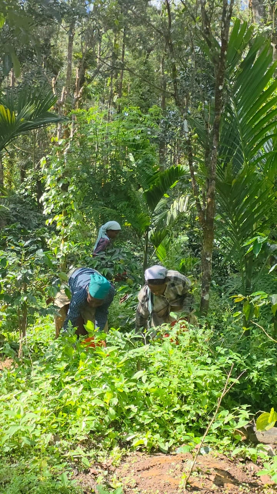

KODAGUOur roots.
Our inspiration.KARNATAKA, INDIA
Our inspiration.KARNATAKA, INDIA
THE PULPOFFE STORY
Every great cup
has deep roots.
Ours begin in Kodagu, Karnataka. A place where coffee is part of the landscape, the livelihood, and the everyday.
Pulpoffe brings that connection to your cup. From familiar instant coffees to distinctive fermented expressions, our collection gives you more ways to enjoy a moment of your own.
Discover what we make ↗